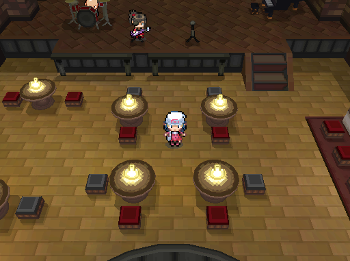

| ||
|

| ||
|
The Meerou Exhibition is a collection of paintings by J. Meerou displayed in one of the buildings in Jubilife City. The player can fulfill the painter's requests for Relics in order to catch Legendary Pokémon.
The Meerou Exhibition is an art gallery dedicated to the works of the eccentric painter J. Meerou. At first, the exhibition hall stands empty, with Meerou pacing restlessly and lamenting his lack of inspiration. Though he has been granted this space to showcase his art, he insists that true creativity can only be unlocked through the recovery of ancient Relics.
Trainers can unearth these Relics by excavating in underground caves with the Explorer Kit. Each Relic brought back to Meerou rekindles his inspiration, resulting in a new painting materializing on the gallery’s walls.
These paintings are not just art—they are gateways. When a player interacts with a completed canvas, they are drawn into the painting’s world, transported into surreal dreamscapes where time, space, and myth intertwine. Within these worlds, legendary Pokémon dwell, waiting to be challenged and caught.
The more Relics delivered, the more paintings appear, gradually transforming the empty hall into a vibrant collection of living masterpieces—and offering access to some of the rarest encounters in the region.
Unlocked by gifting the Scorched Ember relic.
Unlocked by gifting the Silver Waterdrop relic.
Unlocked by gifting the Crackling Fang relic.